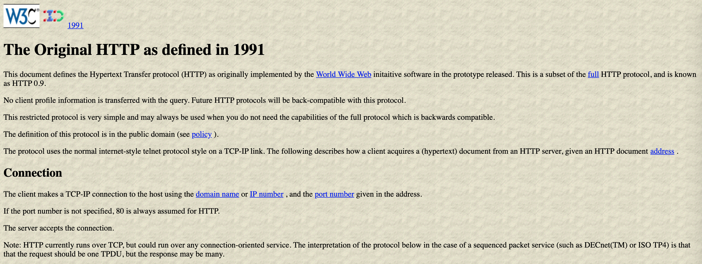
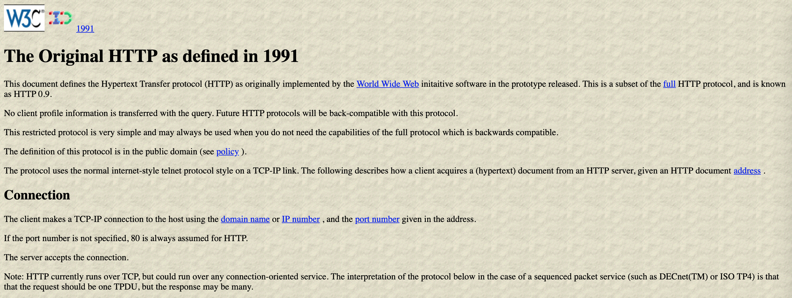
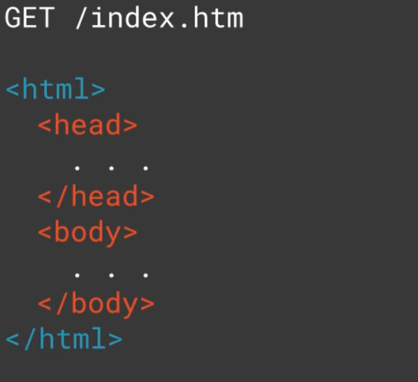
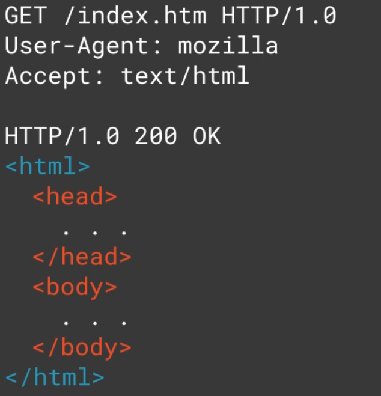
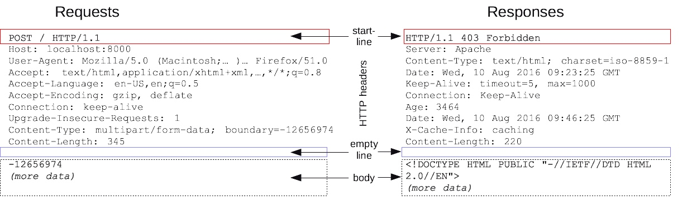
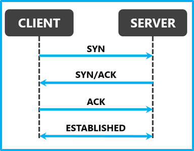
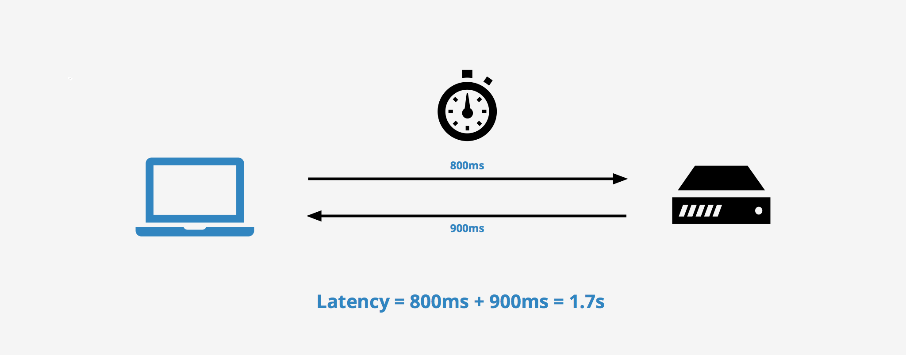
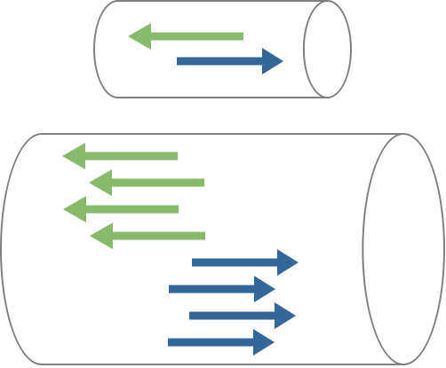

Web Fundamentals for
IT executives
TODO
ASP.net core, Kestrel, Middleware, Request pipeline.
Mimari Bilesenler ve urunler
Mimari Bilesenler ve urunler
Table of Contents
- HTTP Fundamentals
- How browser works
- REST
- Security
- Common Problems with Web Applications
HTTP Fundamentals
- Overview
- Brief History
- Basics
- State
Overview
Hyper text transfer protocol (HTTP) is the most adoped application protocol used today. It is the common language between clients and servers, enabling the modern web.
Brief history of HTTP
Initial specs of HTTP was very simple.


HTTP 0.9: One line protocol
HTTP/0.9 was released in 1991 by Tim Barnes Lee.
It was a text based request, response protocol.
Only HTML was supported.
After each request; connection was terminated.
It was a text based request, response protocol.
Only HTML was supported.
After each request; connection was terminated.
HTTP 0.9

HTTP/1.0 : Rapid growth
Later on, HTTP/0.9 was extended to HTTP/1.0, request and response headers were added, also, you request images, text files, CSS and other. Every connection required a 3 way handshake which was very wasteful.
HTTP 1.0

HTTP/1.1 : Internet Standard
In 1999, HTTP/1.1 was released.
Persistent connections (keep alive) was introduced (which eliminated 3 way handshake for every request), chunked transfer encoding and host header were added.
With host headers, it was possible to host multiple sites for an IP. It was a breakthrough.
Persistent connections (keep alive) was introduced (which eliminated 3 way handshake for every request), chunked transfer encoding and host header were added.
With host headers, it was possible to host multiple sites for an IP. It was a breakthrough.
HTTP/1.1

HTTP/2.0 : Improving Transport Performance
It was 2015 when HTTP/2 released with several enhancements to prior versions, mostly targeting performance and common HTTP/1.1 problems.
Request/Response Model

Request/Response Model
Client communicates with the server using messages (request and response message).
Every request gets a response. Client sends a request and server returns a response.
This is also called a HTTP transaction.
Every request gets a response. Client sends a request and server returns a response.
This is also called a HTTP transaction.
Requests
GET / HTTP/1.1
Accept: image/jpeg
Accept-Language: en-us
Accept-Encoding: gzip, deflate
User-Agent: Mozilla/4.0 (compatible; MSIE 5.01; Windows NT)
Host: ibm.com
Connection: Keep-Alive
Responses
HTTP/1.1 200 OK
Date: Mon, 06 Dec 1999 20:54:26 GMT
Server: Apache/1.3.6 (Unix)
Last-Modified: Mon, 01 Apr 2019 14:06:11 GMT
ETag: "2f5cd-964-381e1bd6"
Accept-Ranges: bytes
Content-length: 327
Connection: close
Content-type: text/html
.... Content here ....
URLs
Uniform Resource Locators (URLs) are used in the request message for communication.

HTTP vs WWW
HTTP is the protocol. WWW (world wide web) is the concept that uses web pages. WWW uses HTTP to serve web pages.
Verbs
HTTP verbs are used to take an action on specific resource(s).
GET
Fetches a resource.
POST
Creates a new resource. POST has a payload that specifies the data required to create the resource.
GET vs POST
- GET can be cached and bookmarked
- Get is visible to eye, but POST is not.
- GET has length limitations. Post does not have any length limitations.
- GET is idempotent and safe.
- POST is not idempotent and not safe.
PUT
Updates an existing resource. The payload may contain the data to be updated.
DELETE
Deletes a resource.
HEAD
Similar to GET,response does not have a body.
PATCH
Partial update of a resource.
HTTP Status Codes
- 1xx : Informational
- 2xx : Successful
- 3xx : Redirect
- 4xx : Client Error
- 5xx : Server Error
1xx
- 100 : Continue
2xx
- 200 : OK
- 201 : Created
- 202 : Accepted
3xx
- 301 : Moved Permanently
- 304 : Not Modified
- 307 : Temporary Redirect
4xx
- 400 : Bad Request
- 401 : Unauthorised
- 403 : Forbidden
- 404 : Not found
- 405 : Method not allowed
5xx
- 500 : Internal server error
- 501 : Not implemented
- 502 : Bad Gateway
- 503 : Service unavailable
- 504 : Gateway timeout
Request/Response format
Request format
[Method] [URL] [Version]
[Headers]
[Body]
[Headers]
[Body]
Response format
[Version] [Status] [Reason]
[Headers]
[Body]
[Headers]
[Body]

Request format
Request = Request-Line
*(( general-header
| request-header
| entity-header ) CRLF)
CRLF
[ message-body ]
Response format
Response = Status-Line
*(( general-header
| response-header
| entity-header ) CRLF)
CRLF
[ message-body ]
Content/Mime Types
Various content types are supported by HTTP. A media type (also known as a Multipurpose Internet Mail Extensions or MIME type) is a standard that indicates the nature and format of a document, file, or assortment of bytes.
- JSON
- XML
- HTML
- Images
- Video
- and many more.
Structure of a mime type: `type/subtype`
Example: application/json, text/html, text/csv, text/plain, image/png, image/jpg
Example: application/json, text/html, text/csv, text/plain, image/png, image/jpg
Content Negotiation
Content negotiation refers to mechanisms defined as a part of HTTP that make it possible to serve different versions of a document (or more generally, representations of a resource) at the same URI, so that user agents can specify which version fits their capabilities the best.
Headers
There are 4 types of HTTP headers:
General Headers: date, connection etc. Used by both clients and server.
Request Headers: Used by client to indicate client configuration.
Response Headers: used by servers to describe server configuration and URL's information.
Entity Headers: Used by servers to describe entities, resources.
General Headers: date, connection etc. Used by both clients and server.
Request Headers: Used by client to indicate client configuration.
Response Headers: used by servers to describe server configuration and URL's information.
Entity Headers: Used by servers to describe entities, resources.


HTTP Connections
The internet consists of 5 layers of OSI model.
Everything runs on transport layer which for HTTP is TCP.
Everything runs on transport layer which for HTTP is TCP.
A packet or TCP packet in specific, is series of bytes, encapsulated in a format or data structure called frame. Frames contain several information such as how long the packet is, how it should be delivered, where it is coming from and going to. A packet's payload can effectively contain 1460 bytes at most.
Slow start is used to detect the current state of the network. If there is a congestion in the network, new connections shouldn't make it worse. Slow start allows the sender to send additional unacknowledged packet for every acknowledged packet it receives. This means that after initial connection, and one acknowledged packet, sender sends two, after getting acknowledgement for two packets, sender can send four and so on.
This geometric growth soon reaches an upper limit defined in the protocol at which point the connection will enter what is called the congestion avoidance phase.
It usually takes a few round trips to get the optimal congestion window size which are very precious to determine the performance. Usually operating systems start with 4 packets which makes 5840 bytes for initial congestion window size which sender needs to wait for acknowledgements.
Today, web pages have size of 2MB of data including images, css, js and other files. In a perfect network conditions, it takes around 9 round trips to transmit the data to the client.
Browsers commonly opens up six connections to a particular host. Congestion window needs to occur six times in parallel. TCP will make sure that those connections play nicely together, but it does not guarantee that their performance will be optimal.
TCP Provides reliability and ordering.
Avoid congestion with flow control.
Avoid congestion with flow control.
HTTP Compression
Compression helps reduce bandwidth usage and transfer size/speed.
HTTP compression is enabled on server side and client should support it.
HTTP compression is enabled on server side and client should support it.
Request-Header : Accept-Encoding: gzip, deflate
Response-Header: Content-Encoding: gzip, deflate
Other compression types: ie brotli, protobuf is available.
Response-Header: Content-Encoding: gzip, deflate
Other compression types: ie brotli, protobuf is available.
SSL/TLS Handshake

- The client issues a secure session request.
- Server sends back x.509 certificate containing server's public key.
- Client authenticates server's certificate against list of known CAs (Certificate Authority). If the certificate is not in the list, user is prompt to accept the certificate.
- Client generates random symmetric key and encrypts it using server's public key.
- Client and user now both have the symmetric key. Client send data using this symmetric key to the server during the session.
HTTP Caching
Last-Modified: Mon, 01 Jan 2018 17:55:15 GMT
Expires: Sat 22 Jan 2029 12:00:00 GMT
Cache-Control: max-age=315360000
Last-Modified: Mon, 01 Jan 2018 17:55:15 GMT
Etag: "8e5bcd-59f-segedbht"
Request:
if-modified-since: Wed, 01 Jan 2017 17:33:12 GMT
Response:
HTTP/1.1 304 Not Modified
Expires: Sat, 11 April 2018 17:33.12
Important HTTP Concepts
Latency

How long it takes for an IP packet to get from one location to another. Round trip time (RTT) is twice the latency. Latency is the major bottleneck for HTTP which uses many round trips to the server.
Bandwidth

Connection between two locations, can handle only so much data at a time before it is saturated. Bandwidth can be bottleneck depending on the amount of data and the capacity of the connection.
Connection Time
Establishing a connection requires a Round trip between the client and the server called the “Three Way Handshake.” This handshake time is generally related to the latency between the client and the server.
TLS negotiation time
If the client is making an HTTPS connection, it needs to negotiate Transport Layer Security (TLS) the successor to Secure Socket Layer (SSL). This involves more round trips on top of server and client processing time.
TTFB – Time to first byte
Time to first byte is the time passed from a client request to start receiving the response from the server. It is the sum of DNS lookup, Connection setup, TLS handshake.
TTLB - Time to last byte
Content Download time, time to last byte or TTLB: This is the time for all the content to complete downloading to client.
Start Render Time
This is the time when user start seeing something on the browser, or browser starts paint process.
Document Complete, Page Load Time
This is the duration which is considered client completely downloaded the page and rendered it.
DNS lookup
Before a client can fetch a web page it needs to translate the hostname to an IP address using the Domain Name System (DNS). This needs to happen for every unique hostname on the fetched HTML page as well, though luckily only once per hostname and this information can be cached.
Session and Cookies
By default HTTP is stateless, session ,cookies and some browser support enables storing state.
Cookies
Cookies are small piece of data (in the shape of key value pairs) stored on the browser and sent to server via request headers per each request. In HTTP/1.1 Headers are not compressed so keeping cookies small is important.
Web/HTTP Session
Web/HTTP session is created in server and identified by a unique key (session id). Session is a data storage (hash table/dictionary) that contains data in key/value pair.
User session contains information about user across multiple HTTP requests.Session ID can be stored in cookies or URL.
Performance Optimization
- Reducing number of HTTP requests
- Client side caching
- Domain sharding
- Bundling and minification
- DNS prefetch/resource hints
- Image Striping
Reducing number of HTTP requests
This is the most important in performance. The more HTTP requests, the slower you page is.
Client Side Caching
Nothing is faster than serving resources from the client's machine. No network resources will be used.
Client side caching TTL can be set through the HTTP header “cache control” and the key “max-age” (in seconds), or the “expires” header.
Static content like images, JS, CSS and other files can be versioned. Once the version changes, client makes a request to get the newer version from the server.
https://foo.com/styles.css?v=342
Client side caching TTL can be set through the HTTP header “cache control” and the key “max-age” (in seconds), or the “expires” header.
Static content like images, JS, CSS and other files can be versioned. Once the version changes, client makes a request to get the newer version from the server.
https://foo.com/styles.css?v=342
Domain Sharding
-
<
- Requests more resources.
- Requires more DNS lookups.
Bundling and minification
Bundling and minification is good for reducing HTTP requests, which will have positive impact on the performance.
CSS and JS can benefit from bundling and minification. Also, you can minify HTML content.
CSS and JS can benefit from bundling and minification. Also, you can minify HTML content.
DNS prefetch/resource hints
Typically DNS is queried once the browser completes rendering HTML.
DNS prefetch and resourse hints tell the browser to resolve DNS to HTML rendering.
DNS prefetch and resourse hints tell the browser to resolve DNS to HTML rendering.
Using Stripes for images
Problems with HTTP/1.1
- It wasn’t designed for todays web pages, ie: 100+ HTTP requests, and 2MB+ page size.
- Requires multiple connections
- Lack of prioritization
- Verbose headers
- Head of line blocking
Multiple Connections
When the app requires 50+ HTTP requests, there is a limit to the number of connections a browser can open per host, most browsers support 6 connections simultaneously.
Establishing a connection requires 3 way handshake.
Establishing a connection requires 3 way handshake.
Lack of prioritization:
Priority is decided by browser. Not be developer or the application. There is no way to specify the order or responses. Browsers need to decide how to best use the connections and the order of resources.
Verbose Headers
There is no header compression. Headers, cookies send to the server for every request which is inefficient especially for very high volume sites.
Head of line blocking
Once the connection is created, it is dedicated for specific request, until the response comes back, it cannot be used. ie: If you need to get 30 resources from host, you can get 6 at a time. Once you request 6 resources, the others must wait for these 6 requests to finish. So, HTTP/1.1 works in a serial way (serial request and response). This is called Head of line blocking.
Common Problems with Web Applications
#1: Big systems fail more often than small systems. Big systems have more external and internal dependencies along with many moving parts. Therefore, big systems should have many defensive mechanisms in place.
#2: Blocked threads are the number one cause of most failures.Slow applications and hung threads are the most popular reasons of failures. These reasons lead to cascading failures and chain reactions. Blocked/hung threads can happen due to several reasons like deadlocks, starvation and live locks. Hung thread detection policies, timeouts, circuit breakers and bulkheads can prevent these failures.
#3: Integration points are number one killer in any system.. Every integration point eventually fails, however a failure in the integration point shouldn’t take down the whole application. Cascading failures occur when problems in one integration point propagates. Failures in integrated services becomes your problem. It even become more serious if you are not prepared for it.
#4: Tight coupled systems fail more often than loose coupled systems. Decoupling middleware is a good practice to enable loose coupling for integration. This principle is applicable and best practice for cloud native applications.
#5: High traffic site's Resource/Connections pools get drained very quickly. Resource/Connection pool have limitations. They can run out of resources rapidly and application performance will start degrading.
#6: Unbalanced capacities causes failures and scalability problems for applications.If the capacities are not aligned, then you have a problem. Capacity and sizing should be planned accordingly.
#7: Never trust a system you have no control over. The downstream application which is running a blocking code, can take your application down.
#8: Slow applications gets more traffic.
When an application is slow, users hit re-load button or F5 many times to reach to the application which causes more traffic.
#9: Fail fast all the time and retry gradually.
Exponential back off, Circuit breakers and timeouts should be embraced. User friendly error codes or default messages should be presented to the user until the stability is established.
#10: Appreciate your hardware resources and utilize them wisely..
Don't fall for CPU and Memory is CHEAP. This is not TRUE. Long running CPU cycles can cause contention which slows down your application and eventually it will fail. Paged or unfragmented memory causes slow seek times.
Don't fall for CPU and Memory is CHEAP. This is not TRUE. Long running CPU cycles can cause contention which slows down your application and eventually it will fail. Paged or unfragmented memory causes slow seek times.
Performance evaluation
- Latency Test - Measures end to end transaction time.
- Throughput Test - Measures number of concurrent transactions a system can handle.
- Load Test - a boolean test, if the system can handle the load or not.
- Stress Test - Finds out the breaking point of a system.
- Endurance Test - Measures if there are any anomalies during tests.
- Capacity Planning Test - Made to find out whether the system performs as expected based on capacity planning and provisioning.
- Degradation Test - Made to find out when the system performance degrades.